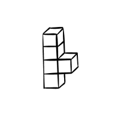
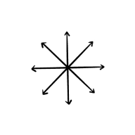
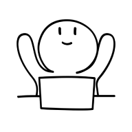
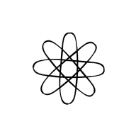

Project
Web-app to support creative professionals
Summary
I helped to develop an application that mediates feedback between creatives and stakeholders
Responsibilities
User Experience Design
User Interface Design
Project
Web-app to support creative professionals
Summary
I helped to develop a web application that interposes in feedback in-between creatives and stakeholders
Responsibilities
User Experience Design
User Interface Design
Research
The project started off with a large target group, namely: creative professionals. I narrowed this down to: audio visual specialists. This decision was based on desk research, in which I found that there are a lot of similarities between the two target groups. This includes that both groups have to be able to take initiative and have to got the ability to create new things.
Which led to the question: “How can we support the creative process of an audio visual specialist?” To answer that, I’ve set-up several interviews with specialists from the work field. This included an editor, camera operator and a narrator. What stood out most was the lack of communication and understanding from clients. This was a common issue; before, during and after the production.
Ideate
Based on the identified issues, I’ve executed multiple creative sessions. The focus laid primarily on the subject ‘feedback’, which was hard to make practicable for both parties.
The creative sessions pointed to a tool that is able to generate feedback in a hasty manner. This will be a bridge between both parties, to hopefully relieve some pain on both ends. The hardest part on this solution is, that not every client would be willing to make an effort to use such a platform (according to the target group).
Develop
Iteration 1
The concept that has been elaborated is called: Select. It is a tool to gain more engagement from stakeholders; by involving them more in the process of montage and distribution. With improved engagement from stakeholders, it’s likely that they’re more empathized and benevolent.
During iteration 1 a low-fidelity prototype was developed, to give participants an impression of what the concept would look like. This, to test whether or not the set-up was desirable (for all parties involved).
Iteration 2
Iteration 2 came to live, with an aesthetically pleasing color scheme and various components. There is also a possibility to give feedback and several projects were enhanced to give a clearer understanding of the yet to be developed web-application. Other additions contained, working via roles/teams and a quick tour after signing up.
Deliver
The last week was dedicated to minor fixes, such as bugs, more advanced sign-up flow and notifications.
The product is consistent with the target group and client (WeTransfer), with little to no defects or flaws noticed. The web application mediates in feedback in-between creatives and stakeholders. This solution lifts weight from the creative and makes sure that there is more empathy from stakeholders. During the project the application took more shape towards co-creation, which concluded the product to be usable for multiple creative disciplines such as; videography, photography and design.